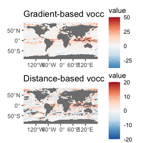
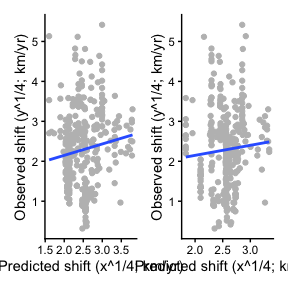
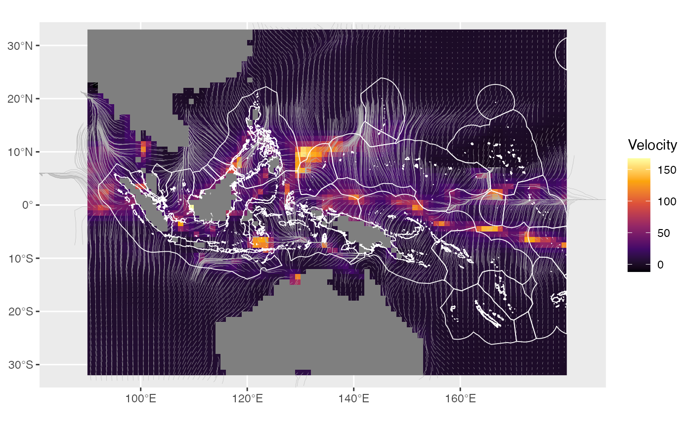

THIS IS A WORK IN PROGRESS TO CONVERT THE OLD RASTER-BASED VOCC PACKAGE TO TERRA. NOT EVERYTHING WORKS YET.
This vignette provides the code to reproduce the examples for the R package VoCC as presented in Garcia Molinos et al. (2019). Refer to the paper and the function documentation for details on function options, considerations on the argument choices and interepretation of output.
For this tutorial we need the following packages (if not installed get them first):
library(VoCC)
library(dplyr)
library(tidyr)
library(data.table)
library(terra)
library(purrr)
# For Plotting
library(ggplot2)
library(tidyterra)
library(patchwork)
library(mapplots)We also need a few data sets that can be accessed from the
VoCCdata package.
library(VoCCdata)Example 1: Prediction of biogeographical shifts
We have a look first at the “marshift” global data set containing reported range shifts in marine species corresponding to given periods of time.
str(marshift)
#> 'data.frame': 343 obs. of 6 variables:
#> $ lat : num 49.7 53.8 53.8 40 43 ...
#> $ long : num -4.33 5 5 1 -9.3 -1.4 -9.3 -71.7 -71.7 -71.7 ...
#> $ timespan : int 30 40 40 55 35 35 84 39 26 54 ...
#> $ years_data: int 23 40 40 15 4 2 5 2 2 2 ...
#> $ taxa : Factor w/ 12 levels "Benthic algae",..: 6 6 6 6 3 3 4 5 5 5 ...
#> $ Shift : num 536.1 65.6 95.9 40 10 ...Next, we calculate the gradient- and distance-based velocities (1960-2009), using the HadiSST data set, from which we will later extract the corresponding values for each observed shift.
HadiSST <- terra::rast(system.file("extdata", "HadiSST.tif", package = "VoCCdata"))
# monthly to annual averages
r <- sumSeries(HadiSST, p = "1960-01/2009-12", yr0 = "1955-01-01",
l = terra::nlyr(HadiSST),
fun = function(x) colMeans(x, na.rm = TRUE),
freqin = "months", freqout = "years")
vt <- tempTrend(r, th = 10) # temporal trend
vg <- spatGrad(r, th = 0.0001, projected = FALSE) # spatial gradient
gv <- gVoCC(vt, vg) # climate velocity
# Now the distance-based velocities
# Take 1960-1970 as base period against 2000-2009
r2 <- c(terra::mean(r[[1:10]], na.rm = TRUE), terra::mean(r[[41:50]], na.rm = TRUE))
# prepare the data frame with the necessary variables
clim <- na.omit(data.frame(terra::values(r2), cid = 1:terra::ncell(r)))
clim[, c("x", "y")] <- terra::xyFromCell(r, clim$cid)
# 1965-2004 (40 yr), 500 km search radius
v <- dVoCC(clim, n = 1, tdiff = 40, method = "Single", climTol = 0.1, geoTol = 500, distfun = "GreatCircle", trans = NA, lonlat = TRUE)Next, we extract the mean velocity estimates for each reported shift by taking the average of all grid cell values within a circle of radius equal to the reported range-shift distance. These are then used to fit the simple linear regression models of observed range shifts against climate velocity. Distance-based velocities are strictly positive by definition, so to compare like with like we change first their sign to negative where present local climates are warmer than their future analogues.
# Change sign as needed and create the distance-based velocity raster
# Change sign as needed - terra approach for value comparison
focal_vals <- terra::values(r2[[1]])[v$focal]
target_vals <- terra::values(r2[[2]])[v$target]
ind <- which(focal_vals > target_vals)
v$velBis <- v$vel
v$velBis[ind] <- v$vel[ind] * -1
# put output in raster format - create single layer empty template like raster(gv)
dv <- terra::rast(terra::ext(gv), resolution = terra::res(gv), crs = terra::crs(gv))
dv[v$focal] <- v$velBis
# Create point geometries and buffer them
coords <- terra::vect(cbind(marshift$long, marshift$lat), crs = "EPSG:4326")
buffer_size <- marshift$Shift * (marshift$timespan / 10) * 1000
# Get the mean velocity within the buffer for each data point.
# Match old raster::extract approach exactly
marshift$GV <- terra::extract(abs(gv[[1]]), coords,
buffer = buffer_size,
fun = mean, na.rm = TRUE,
weights = TRUE, exact = FALSE)[,2]
marshift$DV <- terra::extract(abs(dv), coords,
buffer = buffer_size,
fun = mean, na.rm = TRUE,
weights = TRUE, exact = FALSE)[,2]
# For points that didn't get values (NA), find nearest valid cells
missing_points <- coords[is.na(marshift$GV)] # Identify NAs
if(!is.empty(missing_points)){
marine_cells <- terra::as.points(gv[[1]]) # vector of all valid marine cell locations.
nearest_indices <- terra::nearest(missing_points, marine_cells) # Find the nearest marine cell
nearest_values <- terra::extract(gv[[1]], marine_cells[nearest_indices]) # get the values from the nearest marine cells.
marshift$GV[is.na(marshift$GV)] <- nearest_values[, 2] # Replace the NA values in `marshift$GV`
}
missing_points <- coords[is.na(marshift$DV)] # Identify NAs
if(!is.empty(missing_points)){
marine_cells <- terra::as.points(dv[[1]]) # vector of all valid marine cell locations.
nearest_cells <- terra::nearest(missing_points, marine_cells) # Find the nearest marine cell
nearest_values <- terra::extract(dv[[1]], nearest_cells) # get the values from the nearest marine cells.
marshift$DV[is.na(marshift$DV)] <- nearest_values[, 2] # Replace the NA values in `marshift$GV`
}
# fit the regression models
Mgv <- lm(Shift^(1 / 4) ~ I((GV * 10)^(1 / 4)), data = marshift, weights = years_data)
summary(Mgv)
#>
#> Call:
#> lm(formula = Shift^(1/4) ~ I((GV * 10)^(1/4)), data = marshift,
#> weights = years_data)
#>
#> Weighted Residuals:
#> Min 1Q Median 3Q Max
#> -8.7627 -2.3540 -0.5463 1.5966 14.8297
#>
#> Coefficients:
#> Estimate Std. Error t value Pr(>|t|)
#> (Intercept) 1.20025 0.23469 5.114 5.28e-07 ***
#> I((GV * 10)^(1/4)) 0.50348 0.09599 5.245 2.75e-07 ***
#> ---
#> Signif. codes: 0 '***' 0.001 '**' 0.01 '*' 0.05 '.' 0.1 ' ' 1
#>
#> Residual standard error: 3.865 on 340 degrees of freedom
#> (1 observation deleted due to missingness)
#> Multiple R-squared: 0.07486, Adjusted R-squared: 0.07214
#> F-statistic: 27.51 on 1 and 340 DF, p-value: 2.75e-07
Mdv <- lm(Shift^(1 / 4) ~ I((DV * 10)^(1 / 4)), data = marshift, weights = years_data)
summary(Mdv)
#>
#> Call:
#> lm(formula = Shift^(1/4) ~ I((DV * 10)^(1/4)), data = marshift,
#> weights = years_data)
#>
#> Weighted Residuals:
#> Min 1Q Median 3Q Max
#> -9.1097 -2.3602 -0.7524 1.6379 15.2653
#>
#> Coefficients:
#> Estimate Std. Error t value Pr(>|t|)
#> (Intercept) 0.8565 0.3371 2.541 0.0115 *
#> I((DV * 10)^(1/4)) 0.6192 0.1335 4.636 5.07e-06 ***
#> ---
#> Signif. codes: 0 '***' 0.001 '**' 0.01 '*' 0.05 '.' 0.1 ' ' 1
#>
#> Residual standard error: 3.904 on 338 degrees of freedom
#> (3 observations deleted due to missingness)
#> Multiple R-squared: 0.05979, Adjusted R-squared: 0.05701
#> F-statistic: 21.5 on 1 and 338 DF, p-value: 5.074e-06Produce the observed vs predicted scatterplots with regression lines (Fig. 2 in Garcia Molinos et al. 2019).
# first compare both velocities
p1 <- ggplot() +
geom_spatraster(data = gv[[1]]) +
scale_fill_distiller(palette = "RdBu", direction = -1, limits = c(-50, 50)) +
ggtitle("Gradient-based vocc") +
scale_x_continuous(expand = c(0,0)) +
scale_y_continuous(expand = c(0,0))
p2 <- ggplot() +
geom_spatraster(data = dv[[1]]) +
scale_fill_distiller(palette = "RdBu", direction = -1, limits = c(-20, 20)) +
ggtitle("Distance-based vocc") +
scale_x_continuous(expand = c(0,0)) +
scale_y_continuous(expand = c(0,0))
wrap_plots(p1, p2, ncol = 1)
# scatter plots with the resulting regression line
p1 <- ggplot(na.omit(marshift), aes(x = (GV * 10)^(1 / 4), y = Shift^(1 / 4))) +
geom_point(color = "grey") +
geom_smooth(method = lm, se = FALSE) +
theme_classic() +
scale_color_brewer(palette = "Accent") +
labs(x = "Predicted shift (x^1/4; km/yr)", y = "Observed shift (y^1/4; km/yr)")
p2 <- ggplot(na.omit(marshift), aes(x = (DV * 10)^(1 / 4), y = Shift^(1 / 4))) +
geom_point(color = "grey") +
geom_smooth(method = lm, se = FALSE) +
theme_classic() +
scale_color_brewer(palette = "Accent") +
labs(x = "Predicted shift (x^1/4; km/yr)", y = "Observed shift (y^1/4; km/yr)")
wrap_plots(p1, p2, nrow = 1)
#> `geom_smooth()` using formula = 'y ~ x'
#> `geom_smooth()` using formula = 'y ~ x'
#> Warning: Removed 2 rows containing non-finite outside the scale range
#> (`stat_smooth()`).
#> Warning: Removed 2 rows containing missing values or values outside the scale range
#> (`geom_point()`).
Example 2: Analysis of climate exposure and connectivity in the Western Pacific Ocean
In this example we use climate velocity trajectories (based on 1960-2009 mean annual SST) to analyse climate connectivity in the Western Pacific region and calculate the residence time corresponding to the exclusive economic zones in the region as an index of climatic exposure. First, we arrange the raster layers for analysis.
# prepare raster layers
vel <- gv[[1]]
ang <- gv[[2]]
mn <- terra::app(r, mean, na.rm = T)
# generate a velocity layer centered and cropped to study region to extract the initial coordinates for the trajectories from
x1 <- terra::crop(gv[[1]], terra::ext(-180, 0, -90, 90))
x2 <- terra::crop(gv[[1]], terra::ext(0, 180, -90, 90))
terra::ext(x1) <- c(180, 360, -90, 90)
velc <- terra::merge(x1, x2)
# crop to the desired extent
# display restricted to +180 longitude to avoid plotting issues with date line crossing
velc <- terra::crop(velc, c(90, 180, -32, 33))We can now populate the data frame with the cell centroid coordinates for the trajectories.
lonlat <- data.frame(terra::xyFromCell(velc, 1:ncell(velc)))
lonlat$vel <- terra::extract(vel, lonlat, ID = FALSE)
lonlat$ang <- terra::extract(ang, lonlat[, 1:2], ID = FALSE)
lonlat$mn <- terra::extract(mn, lonlat[, 1:2], ID = FALSE)
lonlat$lineID <- 1:nrow(lonlat)
lonlat <- drop_na(lonlat)Let’s calculate the trajectories with parallel processing to demonstrate how this can be used to speed things up (especially useful when dealing with fine resolutions or large extents).
traj <- voccTraj(lonlat, vel, ang, mn, x_res = terra::res(vel)[1], y_res = terra::res(vel)[2], tyr = 50, tstep = 1/12)Plot them over the climate velocities and the EEZ polygons from the EEZs data set (Fig. 3a in Garcia Molinos et al. 2019)
# create the spatial object with the trajectories and plot them together with the EEZ polygons
lns <- trajLine(traj)
# mirai::daemons(0) # Set daemons to 0 to close cluster
# Load and simplify polygons to speed plotting up
EEZs <- sf::st_read(system.file("extdata", "EEZs.gpkg", package = "VoCCdata")) %>%
sf::st_break_antimeridian() %>%
sf::st_simplify(preserveTopology = TRUE, dTolerance = 500) %>%
sf::st_crop(xmin = 75, xmax = 180, ymin = -35, ymax = 35)
#> Reading layer `EEZs' from data source
#> `/Library/Frameworks/R.framework/Versions/4.5-arm64/Resources/library/VoCCdata/extdata/EEZs.gpkg'
#> using driver `GPKG'
#> Simple feature collection with 35 features and 22 fields
#> Geometry type: MULTIPOLYGON
#> Dimension: XY
#> Bounding box: xmin: -179.9999 ymin: -31.24447 xmax: 179.9999 ymax: 31.79787
#> Geodetic CRS: +proj=longlat +datum=WGS84 +no_defs
ggplot() +
geom_spatraster(data = velc, aes(fill = voccMag)) +
scale_fill_viridis_c(option = "inferno", name = "Velocity") +
geom_sf(data = lns %>% sf::st_shift_longitude(), colour = "grey70", linewidth = 0.1) +
geom_sf(data = EEZs %>% sf::st_shift_longitude(), colour = "white", fill = NA, linewidth = 0.3) +
scale_x_continuous(expand = c(0, 0)) +
scale_y_continuous(expand = c(0, 0))
We now calculate the trajectory classes and residence times for each EEZ using the traj25 data set.
# classify trajectories (16 trajectories starting from each 1-deg cell cell)
clas <- trajClas(traj25, vel, ang, mn, trajSt = 16, tyr = 50, nmL = 20, smL = 100, Nend = 45, Nst = 15, NFT = 70)
# Extract proportions by categories for each EEZ
v <- data.table(terra::extract(clas[[7]], EEZs, df = TRUE))
v[, TrajClas := as.character(TrajClas)]
v[, ID := as.ordered(ID)]
# proportions by class
d <- prop.table(table(v), 1)
# residence times by EEZ
EEZa <- resTime(EEZs, vel, areapg = NA)Finally let’s plot the category proportions as pie charts on top of each EEZ, the size of the chart being proportional to their respective residence time (Fig. 3b in Garcia Molinos et al. 2019).
D <- data.table(d) # put data in long format
D[, name := as.character(EEZs$Territory1)[as.numeric(ID)]] # add EEZ names for reference
D[, RT := as.character(EEZa$resTim)[as.numeric(ID)]]
# prepare data frame to plot the pie charts with
dt <- as.data.frame.matrix(d)
dt$country <- as.character(EEZs$Territory1)
coords <- sf::st_coordinates(sf::st_centroid(EEZs))
dt[, c("x", "y")] <- coords[, c("X", "Y")]
dt$RT <- EEZa$resTim
# # generate the plot
plot(velc)
plot(eez_simp, add = TRUE)
mycol <- c(scales::alpha(rgb(192, 192, 192, maxColorValue = 255), 0.5), scales::alpha(rgb(204, 255, 204, maxColorValue = 255), 0.5), scales::alpha(rgb(255, 153, 51, maxColorValue = 255), 0.5), scales::alpha(rgb(255, 51, 51, maxColorValue = 255), 0.5), scales::alpha(rgb(51, 51, 255, maxColorValue = 255), 0.5), scales::alpha(rgb(204, 102, 0, maxColorValue = 255), 0.5), scales::alpha(rgb(204, 0, 204, maxColorValue = 255), 0.5), scales::alpha(rgb(255, 255, 51, maxColorValue = 255), 0.5), scales::alpha(rgb(153, 204, 255, maxColorValue = 255), 0.5))
# mylab = c("Non-moving", "Slow-moving", "Internal Sink", "Boundary sink",
# "Source", "Internal sink","Corridor", "Divergence", "Convergence")
for (i in 1:35) {
add.pie(z = as.numeric(dt[i, 1:5]), x = dt[i, "x"], y = dt[i, "y"], radius = log(dt[i, "RT"]), col = mycol, labels = "")
}References
García Molinos, J., Schoeman, D. S., Brown, C. J. and Burrows, M. T. (2019), VoCC: An R package for calculating the velocity of climate change and related climatic metrics. Methods Ecol Evol. doi:10.1111/2041-210X.13295